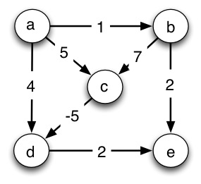

1. Single-Source, Single-Destination (2 pts)
Write the explicit linear program for finding the shortest path from node
a to node e in the graph above (single-source, single destination
shortest paths). By "explicit" I mean write all the inequalities and
equations using variables da, db, dc, dd, and de, and the actual
numbers for w(u,v), not the generic form on page 860. The first line is
shown.
Maximize:
Subject to constraints:
_d__b_ ≤ _d__a_ \+ 1
Do you see how this gets _shortest paths even though we are maximizing distances?_
*2. Single-Source, All-Destinations (1 pt) *
How would you generalize the program you wrote above to solve the single source shortest paths problem from a to all vertices in the graph above? Write the part that changes.
3. Slack Form (2 pts)
Rewrite your equations and inequalities to be in slack form. Every variable
you used above should appear in every equation, even if they have 0
coefficients. Make all the coefficients explicit, including 0 and 1
coefficients (this will help you see what goes into the matrix). Use slack
variables y1, y2, ... in addition to the variables above. There should be
only one constant on the right hand side.
-1da + 1db + 0dc + 0dd + 0de + y1 = 1
Got time? All-Pairs Shortest Paths: How would you need to modify the linear program you wrote in part 1 and 2 to solve the all-pairs shortest paths problem in the graph above?